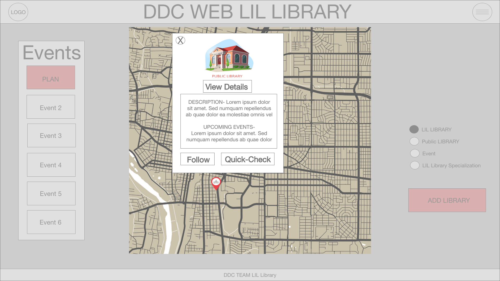
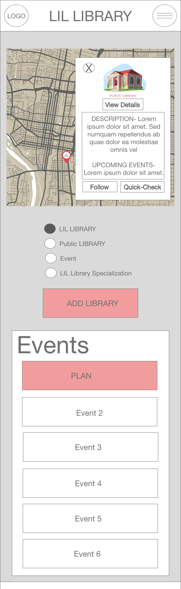
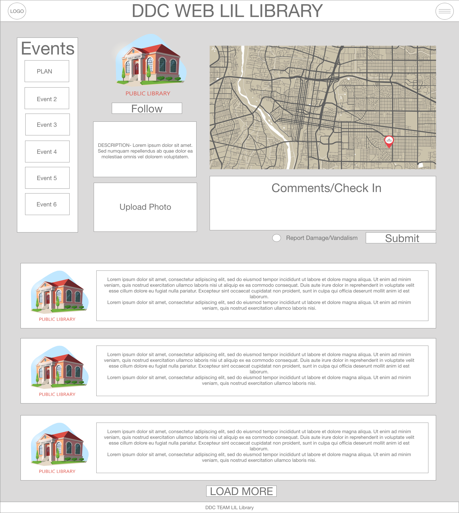
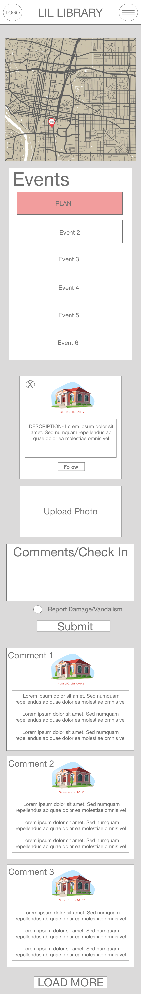
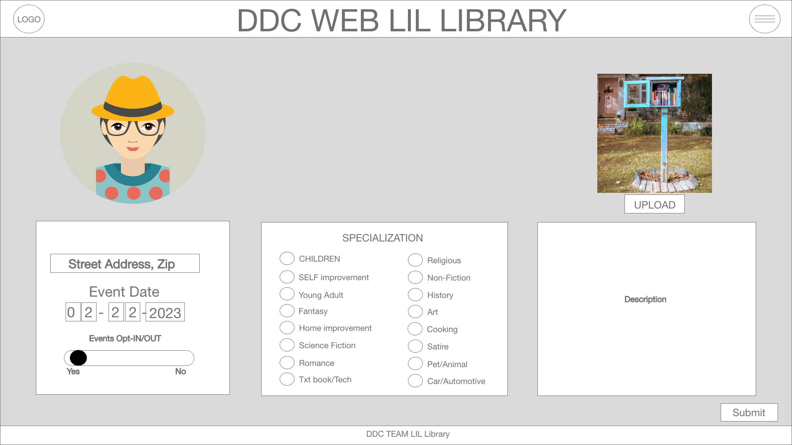
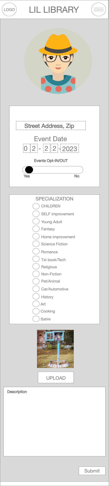
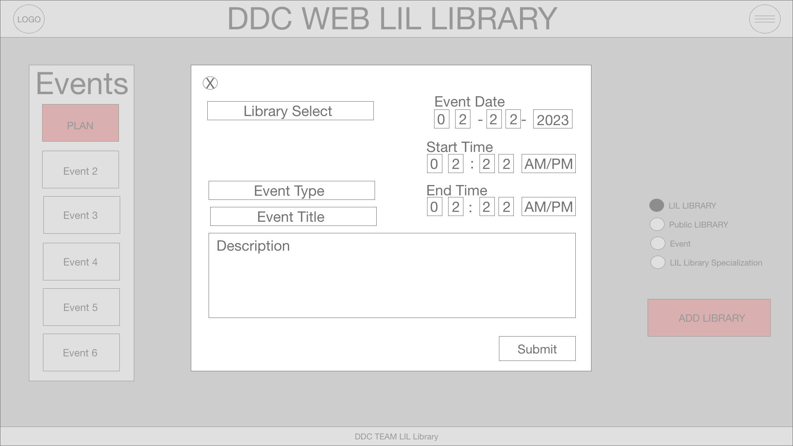
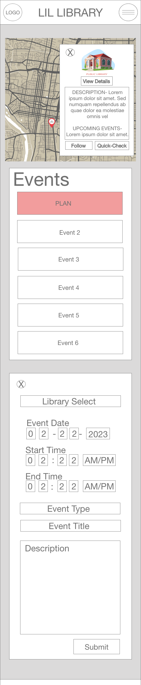

Content Strategy
This website will provide the local Albuquerque community with a tool to better connect neighborhoods to the Little Libraries and those who use them and maintain them. Additionally, this application will encourage literacy and literary event planning, promotion and attendance. In addition, this site will:
- Let users know, once they are logged in, what Little Libraries and public libraries are within walking distance
- The Who, What, When and Where of literacy and literary events
- The ability to search for specific types of Little Libraries
- The ability, as a Steward of a Little Library, to manage their Little Library
The map is critical to the project and will be the central feature of the site.
Library Information Pages
Library map popup page
When a user selects a library map pin from the map it will present the user with a card that contains information about that library including:
- Desktop and Mobile views will be a card overlay on the map with
- A picture of the library
- A "View Details" button that when clicked will open a detailed view of the library
- The name and short description of the library followed by the next event (if any) at the library in a box
- Below the description and event box is a "Follow" button that will allow a user to follow a library and a quick-checkin button that will log just their time and date of their visit to the library.
- This modal can be closed and the user will remain on the main page.
Wireframes
Desktop Wireframe

Mobile Wireframe

Library Details Page
The library detail page will provide a user with everything they need for the information about the library and the ability to interact with the library
- Desktop view
- On the left of the top most section is a vertical, chronological listing of events at the library (if any).
- To the right of the event listing is a column that starts with a photo of the library, a "Follow" button just below it; the name and description of the library, and lastly a drag and drop location for uploading a photo of the library.
- The far right column shows a static image of the library on the map followed by a free text area for adding comments or checking in.
- Below the comment is a radial button to flag the comment/checkin as a damage report with the sumbit button just to it's right.
- The final section is a listing of the pictures of and comments received for the library; this will load the three most recent comments and more comments can be loaded from the "LOAD MORE" button below the third comment.
- Mobile view
- The view will shift to a vertical alignment with the static map image, followed by
- Events
- Photo, description and follow button
- Drag and drop photo upload
- Comments/Checkin with the damage flag and submit button
- Photo and comments in recent order but vertically aligned
Wireframes
Desktop Wireframe

Mobile Wireframe

Register Library
The library registration page can be accessed from the main landing page or the user update page if the user already has at least one library registered with the site.
- Desktop view
- At the top of the form on the left will be the user's avatar to provide feedback to the user that this is their account; opposite, on the right, is a drag and drop for adding a photo of the library.
- The form below is presented in three columns:
- The right column provides input fields for the name, address, and a togle switch to opt in to having events at their location.
- The center column allows the user to select a specialization for their library from a broad group of standard categories
- The left column provides the user the ability to add a description for their library.
- The "Submit" button is just below the description box.
- Mobile view
- The view will shift to a vertical alignment headed by the user avatar, followed by
- The name, address, and opt in toggle for events
- Specialization list
- Drag and drop photo upload
- Description
- "Submit" button
Wireframes
Desktop Wireframe

Mobile Wireframe

Events
Users will be encouraged to plan and attend literacy and literary events at the library locations. The hope is to make connections between books, the people who enjoy and/or need them, and the neighborhoods that the libraries are within.
Plan An Event Page
- Desktop and Mobile views
- When a user clicks on the "PLAN EVENT" button, available on the main landing page and on the individual library details page, they will be presented a page that they will complete to create an event by doing the following:
- Select the library that the event will be held at
- Select the event type from a dropdown menu of topics with the option to select "other" and provide a brief category for it
- Enter an event title
- Enter the date, start and end time
- Just below the description field on the right is the "Submit" button for the user to create the event once they have completed the fields.
Wireframes
Desktop Wireframe

Mobile Wireframe

Edit events
The form to edit the event will be very similar to event creation page but when selected will be pre-populated with the event owner information and in addition to the "Update" button in place of "Submit" will be a "Delete" button in if the organizer needs to cancel the event.